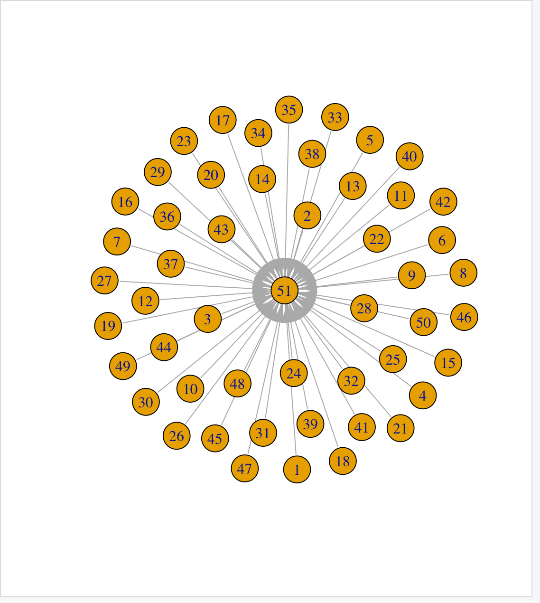

ARMandNetworking
Transaction Data Show
I got some tweets from Twitter API with the topic of 2016 U.S. Presidential Election. Clean them and transfer them to the transaction data so that it's convenience for us to use Associate Rules Mining to analyze and use network visualization skills to discover relationship about hot-words.
Screen shot of the Transaction Data
Each line represents a tweet without stopwords, idol and html tag. There are only meaningful
words left in the tweet for further analysis.
Let's see what Hot-Word with the help of WorldCloud in R.
It seems that everything is about the election and time. Most words have a strong demanding meaning and inspire the desire of voters to act. The hot word in tweets about the election is similar to Hillary and Trump personal tweets. That's an interesting finding. Maybe people tends to cite sentences from their leaders.
Introduction of Associate Rules Mining
Association rules learning is a rule-based machine learning method for discovering interesting relations between variables in large databases. It is intended to identify strong rules discovered in databases using some measures of interestingness. Based on the concept of strong rules, Rakesh Agrawal, Tomasz Imieliński and Arun Swami introduced association rules for discovering regularities between products in large-scale transaction data recorded by point-of-sale (POS) systems in supermarkets. And let me introduce three important indicators.
Support: Sup(X,Y)=P(X,Y)
Confidence: Conf(X,Y)=P(Y|X)
Lift: Lift(X,Y)=Sup(X,Y)/(Sup(X)*Sup(Y))
With the help of three indicator, we use Apriori to calculate the interesting associate rules in the database.Apriori is an algorithm for frequent item set mining and association rule learning. It identifies items in the database which appear sufficiently enough and the result can be applied to many domians such as market analysis.
ItemSets -> Generate K-Itemset, Candidates(Join Steps) ->Checking Support ->Frequent Items -> Set of K-1 frequent itemsets is None?(IF no, Return Generate K-Itemset) ->Stop
Because there are many overlapping rules in the text dataset. In order to collect effective information, we decide to filter most of the rules and keep rank 15 part of support, confidence, lift for further research.
Table Of The Top 15 Rules For Support
That's valuable information from this ranking support table. You see, christopher,collusion,russia always appear together. Therefore, they take over the ranked 3 position in the table. We still remember that On May 10, 2017, U.S. President Donald Trump disclosed classified information to Russian government representatives, creating political and security concerns in the United States and its allies, especially Israel. It seems that the Donald Trump's disclosures of classified information is a hot topic in tweets
Table Of The Top 15 Rules For Confidence

From the rank 15 confidence table, you can know when Skynews appear,then follow the Dossier,Collusion,Russia,Trump, which tell us that skynews might be the first media to recover the Donald Trump's disclosures of classified information. With the assumption, I search in the google with the key word 'Sky Mew,Trump,Russia'. This is the first searching result 'Christopher Steele: Confessions of a former British spy on Johnson, Putin, Trump, and James Bond'. It proves my judgement.
Table Of The Top 15 Rules For Lift
When lift is higher than 1, it means that X and Y have positive relationship and be possible to appear together. From the table, we know that sky new focus their attention on reporting Donald Trump's disclosures of classified information, which leads to a strong positive relationship between skynews and russia,trump,collusion,steele.
Network Visualization
Igraph in R
VisNetwork in R
NetworkD3 in R
Since the network plot in NetworkD3 is the most clear and impressive, we use this plot to explain some interesting finding. There is only one center point of the whole network "skynews". Other points are surrounding the center and their words are always overlapping. Most frequency keyword are "British","Russia","Trump", indicating that skynews is a media in England and report the the Donald Trump's disclosures of classified information.
Some discussion about Associate Rules Mining and Network Visualization
Using Associate Rules Mining, we find that it's skynews, a famous media from England, reported the Donald Trump's disclosures of classified information. It's a hot politic topic in 2017 and become an important part of American political struggle. With the help of tweets analysis, we realize that 2016 president election is controversial. And many people can not accept Trump policy, leading to an enormous conflict in 2017.That's why I am interested in the 2016 president in the United States, Trump doesn't stand for Republican and Democratic interests, as a result, Trump always suffers from serious political allegations. It's hard to say Trump's policy is suitable for America.
Also, the network visualization is a Radial network structure. The center is Skynews, connecting points about Trump, Russia, christopher, England. Since just one center in the whole network structure, we can make a conclusion that skynews report the Donald Trump's disclosures of classified information. The result is similar with the associate rules mining. But it doesn't mean that network visualization is useless. If there are several center, we can notice the distance between different centers and discover some valuable information from the visualization. For example, which kind of center is similar. That's one of the key value of the network plot.